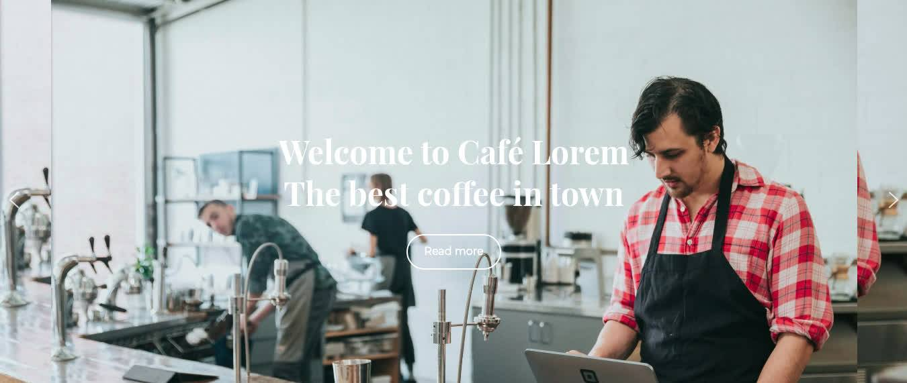
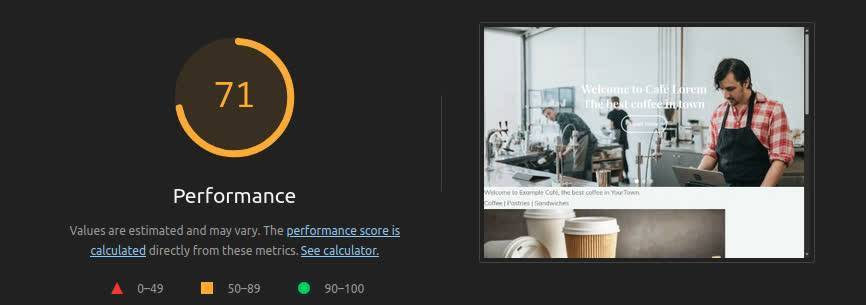
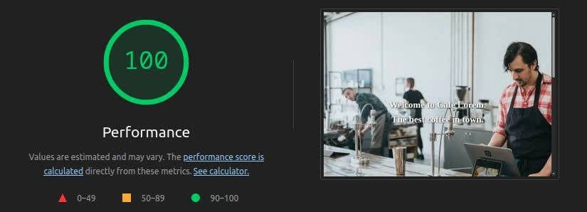

From Bloated WordPress to Lightning-Fast Static Site

Problem
A local (hypothetical) café had a WordPress site that looked fine at first glance but was painfully slow to use. The homepage was nearly 3MB, loaded in 3 seconds, and was running on around 5 plugins.
Slow sites often frustrate customers and drive them away before they even see the menu.
So, I decided to rebuild the homepage as a static site to test how much performance could improve without changing the design much.
This is what I've done:
- Audited the site using Google Lighthouse (on Chromium browser) to capture baseline performance metrics.
- Exported the content (text + images) from WordPress.
- Rebuilt the homepage in plain HTML and CSS (no JavaScript or unnecessary assets).
- Optimized images by compressing and resizing them for web (using ImageMagick and jpegoptim).
- Tested locally using a lightweight server (Python's http.server).
Results
The difference was (somewhat) dramatic:
- Page size dropped from 3MB -> 140KB
- Load time improved from ~3s -> <1s
- Lighthouse performance score jumped from 71 -> 100
Before:

After:

You can also check out the before and after Lighthouse reports yourself, along with the result static page if you want.
With fewer moving parts, the site also became simpler to host and more secure (no WordPress plugins or PHP backend to maintain).